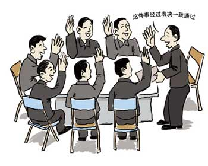

决策风格测试
15089 人测试过
2012-03-31 发布

开始测试
随着年龄的增长，我们也要开始学着为自己安排生活，为一些重大事件做决定，例如考试、升学、就业、交友、婚姻等，甚至平常的生活琐事也都充满着抉择。
有的人能理性分析做决定；有的人却需要依赖他人为自己下决定。你知道自己是如何做决定的吗？这样的决策方式你满意吗？让我们透过下列的活动，来探索你的决策风格，并预想一个妥善的方式，让自己的决策风格更臻圆满。
猜你喜欢：